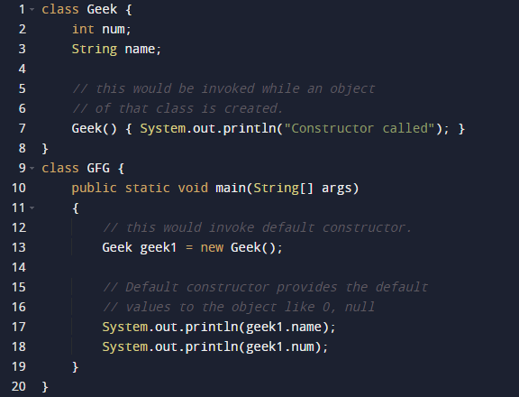

Java constructors or constructors in Java is a terminology been used to construct something in our programs. A constructor in Java is a special method that is used to initialize objects. The constructor is called when an object of a class is created. It can be used to set initial values for object attributes.
In Java, a constructor is a block of codes similar to the method. It is called when an instance of the class is created. At the time of calling the constructor, memory for the object is allocated in the memory. It is a special type of method which is used to initialize the object. Every time an object is created using the new() keyword, at least one constructor is called.
How Constructors are Different From Methods in Java?
• Constructors must have the same name as the class within which it is defined while it is not necessary for the method in Java.
• Constructors do not return any type while method(s) have the return type or void if does not return any value.
• Constructors are called only once at the time of Object creation while method(s) can be called any number of times.
Now let us come up with the syntax for the constructor being invoked at the time of object or instance creation.
class Geek
{
.......
// A Constructor
Syntax() {
}
.......
}
// We can create an object of the above class
// using the below statement. This statement
// calls above constructor.
Syntax obj = new Syntax();
The first line of a constructor is a call to super() or this(), (a call to a constructor of a super-class or an overloaded constructor), if you don’t type in the call to super in your constructor the compiler will provide you with a non-argument call to super at the first line of your code, the super constructor must be called to create an object:
Example
If you think your class is not a subclass it actually is, every class in java is the subclass of a class object even if you don’t say extends object in your class definition.
Need of Constructor
Think of a Box. If we talk about a box class then it will have some class variables (say length, breadth, and height). But when it comes to creating its object(i.e Box will now exist in the computer’s memory), then can a box be there with no value defined for its dimensions. The answer is no.
So constructors are used to assign values to the class variables at the time of object creation, either explicitly done by the programmer or by Java itself (default constructor).
When is a Constructor called?
Each time an object is created using a new() keyword, at least one constructor (it could be the default constructor) is invoked to assign initial values to the data members of the same class.
The rules for writing constructors are as follows:
• Constructor(s) of a class must have the same name as the class name in which it resides.
• A constructor in Java can not be abstract, final, static, or Synchronized.
• Access modifiers can be used in constructor declaration to control its access i.e which other class can call the constructor.
So by far, we have learned constructors are used to initialize the object’s state. Like methods, a constructor also contains a collection of statements(i.e. instructions) that are executed at the time of Object creation.
Types of Constructors in Java
Now is the correct time to discuss the types of the constructor, so primarily there are two types of constructors in java:
• No-argument constructor
• Parameterized Constructor
• Default Constructor
1. No-argument constructor: A constructor that has no parameter is known as the No-argument or Zero argument constructor. If we don’t define a constructor in a class, then the compiler creates a constructor(with no arguments) for the class. And if we write a constructor with arguments or no arguments then the compiler does not create a default constructor.
Example

Output
Constructor called
null
0
2. Parameterized Constructor: A constructor that has parameters is known as parameterized constructor. If we want to initialize fields of the class with our own values, then use a parameterized constructor.
Example
Output
GeekName :adam
and GeekId :1
3. Default Constructor: A constructor that has no parameters is known as default the constructor. A default constructor is invisible. It is taken out.It is being overloaded and called a parameterized constructor. The default constructor changed into the parameterized constructor. But Parameterized constructor can’t change the default constructor.